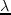

Next: Iterative Spectrum Balancing Up: DSM Level 2 Previous: DSM Level 2 Contents
The fundamental problem is that the total power constraints on the modems couple the optimisation across frequency. As such optimisation must be done jointly across all tones, which leads to an exponential complexity in . We overcome this problem through the use of the dual decomposition method. This technique allows us to replace the constrained optimisation problem with an unconstrained maximization of a Lagrangian2.12 The Lagrangian incorporated the constraints implicitly into the cost function, removing the need for the constraints to be explicitly enforces. As a result, the optimisation can be decoupled across frequency, and an optimal solution can be found in a per-tone fashion. This leads to a linear rather than exponential complexity in and a computationally tractable problem.
In practical terms, that means that the Spectrum Management Problem can be 'simplified' to include the pan-channel power constraints, meaning that instead of generating many solutions to the general (first line of (2.26)) problem, and then subsequently discarding those as they do not satisfy the bundle power constraints, global power is a focal consideration. The Lagrangian decomposition of (2.26), encompassing the power constraints, is shown in (2.29)
Is was shown by Yu and LuiWei Yu and R. Lui. (2006) that this decomposition is an exact match to the originally stated problem for large numbers of channels.
It is also stated in Alastair McKinley (2009) that (2.29) can be tonally decoupled, and a (unfortunately non-convex) Lagrangian expression for each channel generated, as in (2.30), and by optimising for a maximal per-tone Lagrangian, and searching  space2.13, the original problem can be solved.
Since (2.30) is non-convex, an exhaustive search across space is required2.14Even with the Lagrangian decomposition, the computationally explosive nature of this exhaustive bit-field search renders OSB computationally intractable for more than four or five lines. Some run-times from Alastair McKinley (2009) are shown in figure 13
The generalised algorithm for OSB is shown in figure 10
OSB can be augmented using a Branch and Bound searching structure into Branch and Bound OSB (BBOSB). BBOSB is covered in detail in P. Tsiaflakis (2006), but suffice to say, even with the improved searching structure, BBOSB is still exponential in  , but with a lower complexity coefficient; where OSB is only tractable for 4-5 lines, BBOSB is tractable up to approximately 10 lines Alastair McKinley (2009).
, but with a lower complexity coefficient; where OSB is only tractable for 4-5 lines, BBOSB is tractable up to approximately 10 lines Alastair McKinley (2009).
Andrew Bolster 2011-05-22